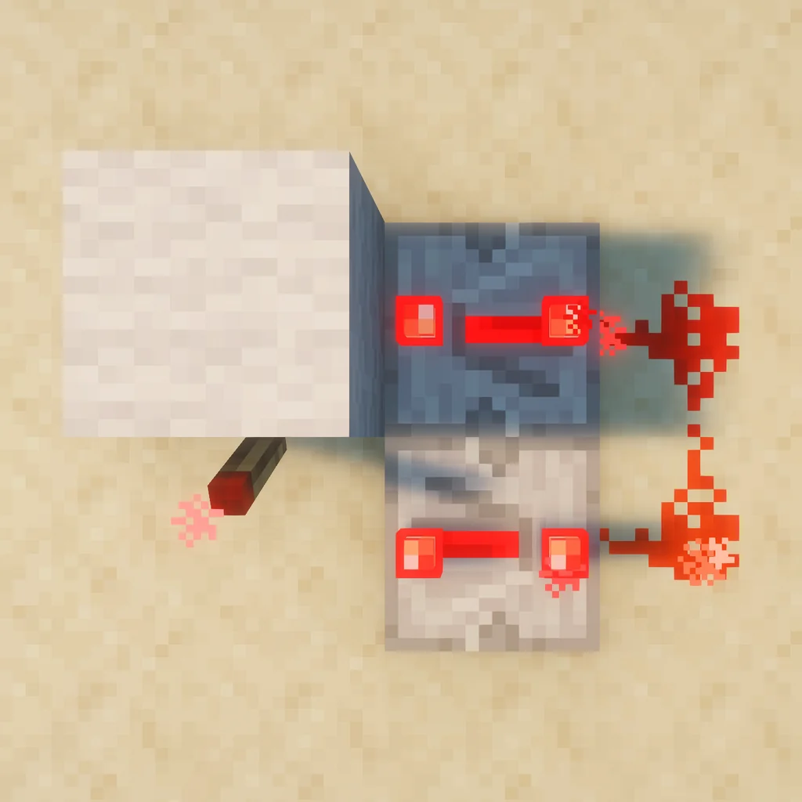

Hi, ich bin TheCraftedTech.
Ich baue eigene Tools und Software — von Weboberflächen über Minecraft-Plugins bis zu eingebetteter Hardware. Hier findest du meine Projekte, alle offen auf GitHub.

Projekte
Eine Auswahl meiner Arbeit
Frei verfügbar auf GitHub — mehr Details auf den Projektseiten.


Arbeitsweise
So arbeite ich
Was mir bei meinen Projekten wichtig ist — unabhängig davon, was ich gerade baue.
Offen von Anfang an
Der Quellcode ist öffentlich auf GitHub, unter freien Lizenzen wie GPL-3.0 und MIT. Jeder darf nachlesen, selbst bauen und verbessern.
Gut dokumentiert
README, Changelog und Anleitungen gehören zum Projekt dazu — damit man nicht raten muss, wie etwas installiert oder gebaut wird.
Nachprüfbar & ehrlich
Fertige Releases mit Prüfsummen und ein offener Teststatus: Bei Home TV steht dabei, was getestet wurde — und was nicht.
Mehr auf GitHub
Alle Projekte, Releases und der komplette Quellcode — folge mir, um neue Veröffentlichungen nicht zu verpassen.